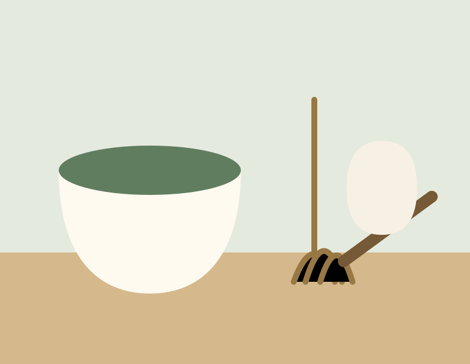

1 · ToolsView Matcha Tea Sets on Amazon
Jade Leaf Matcha Traditional Starter Set – Japanese Matcha Gift Set Includes: Bamboo Whisk (Chasen), Scoop (Chashaku), Stainless Steel Sifter, Handmade Matcha Bowl
This starter set brings together a handmade matcha bowl, bamboo whisk, bamboo scoop, and stainless steel sifter. It is a convenient foundation for preparing matcha at home without selecting each essential tool separately.
Best forFirst-time matcha makers and gift giving
Included toolsBowl, whisk, scoop, and sifter